Two Universities in Contrast, and a Tsinghua Scholar's Causal Reframing
This three-day visit revealed two strikingly different "university evolution paths" within the same country. SUSTech sits in a period of rapid transformation driven by Shenzhen's policy shifts, with departmental structures rewritten almost every year. HKUST-GZ inherits 34 years of HKUST's academic-to-commercial conversion lineage, treating "academia to industry" as an assembly line from a student's first day. Professor Yu Chun's keynote lifted both cases to a shared question: "In the era of large language models, how should the HCI research paradigm be reconstructed?" His answer was a single word: causality.
Three-Day Itinerary at a Glance
Two cities, three campuses. Day 1 was a full day at SUSTech in Shenzhen; Day 2 transitioned to Guangzhou for the HKUST-GZ campus; Day 3 returned to HKUST-GZ for Professor Yu Chun's keynote.
SUSTech School of Design and main campus tour
Hosted by collaborator Prof. Li Xueliang; exposure to HCI, design, and materials research directions; review of project posters including ProjecTA.
Labs and product showcase
School of Design labs (robotics, projection, 3D printing, and laser cutting), and graduation-project showcase (OptiRay, MIMETICS, Hearing Aid).
HKUST-GZ campus tour and departmental exchange
Hosted by collaborator Prof. Zhou Qiushi; new campus architecture, HCI faculty composition, and the materials-AI lab corridor.
Exchange on the business incubation system
Conversation with researchers from HKUST-GZ affiliated companies: the six-tier incubation structure, the Red Bird Program, and the academic-to-commercial conversion pipeline.
"A Causal Perspective on Human-Computer Interaction in the LLM Era: From Interactive Learning to the Human World Model"
Professor Yu Chun, Department of Computer Science, Tsinghua University, on May 29, 2026. Curved-screen auditorium, roughly 60 minutes plus open Q&A.
Follow-up conversation with Prof. Zhou Qiushi
Philosophy of technology; how academic research can extend into artistic works to improve the output efficiency of a single research project.
Southern University of Science and Technology: An Internationalized University Amid Rapid Policy Shifts
Shenzhen's developmental velocity has made SUSTech a university that is "always redefining itself." Its departmental structure, research planning, and admissions strategy are reshaped every few years by Shenzhen's policy direction. This visit gave me a direct sense of that "fast but unstable" duality.
1. Rapid Transformation Driven by Policy
Shenzhen's development policies shift markedly every few years, and the university adapts at high speed. A direct example: SUSTech's HCI research community had originally planned to establish an independent School of Design, but this plan has since been shelved or restructured due to policy changes. Departmental structures, faculty recruitment, and research-direction realignments occur far more frequently than at traditional mainland universities. This is both Shenzhen's strength (rapid experimentation) and its burden (a lack of long-term stability).
2. Internationalized Faculty and a 1:1 Student-to-Faculty Ratio
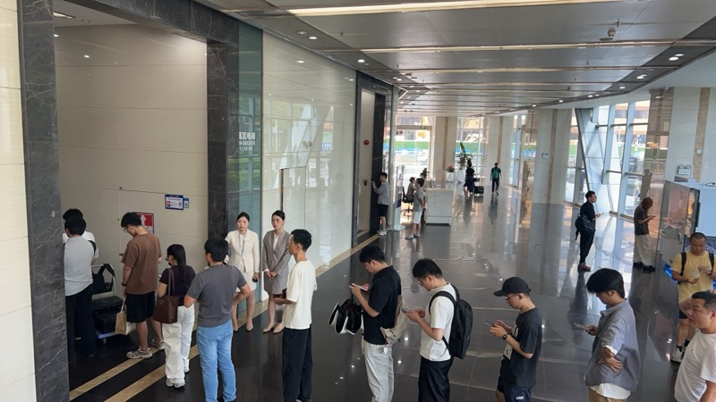
3. HCI Research Directions: Diverse, International, Unsettled
The diversity of HCI research directions at SUSTech is striking, and it was my most immediate impression of the visit. I observed at least the following directions:
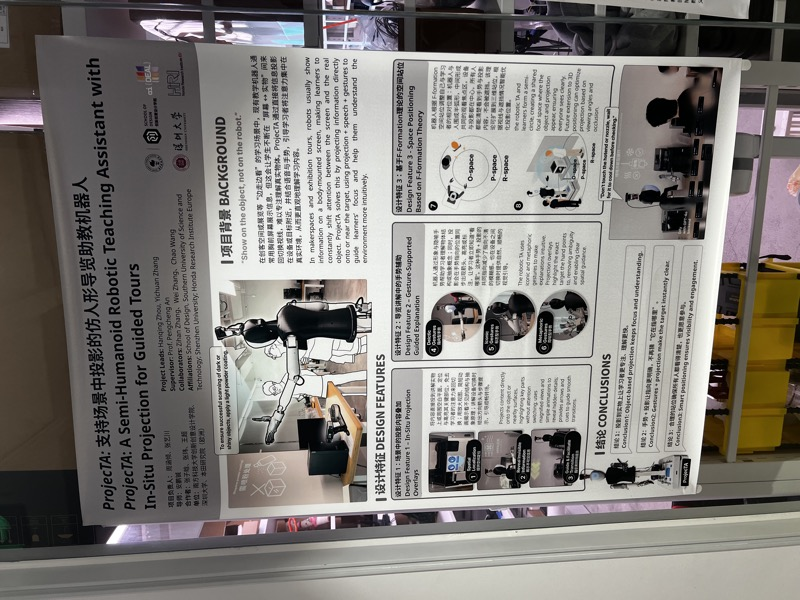
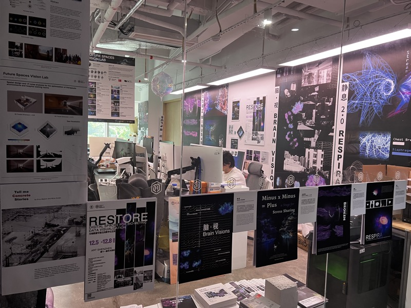
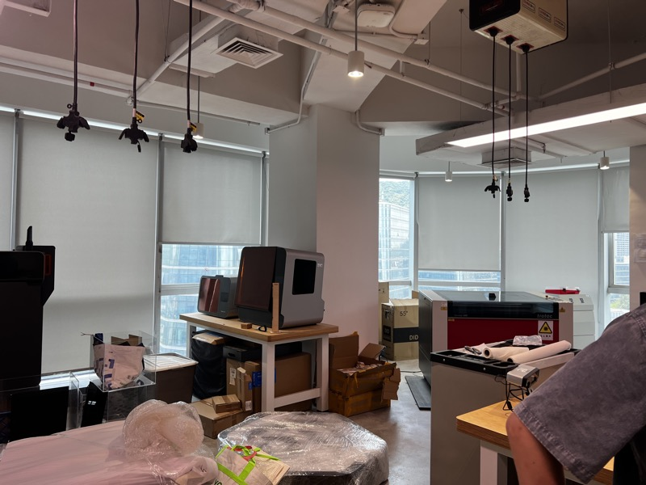
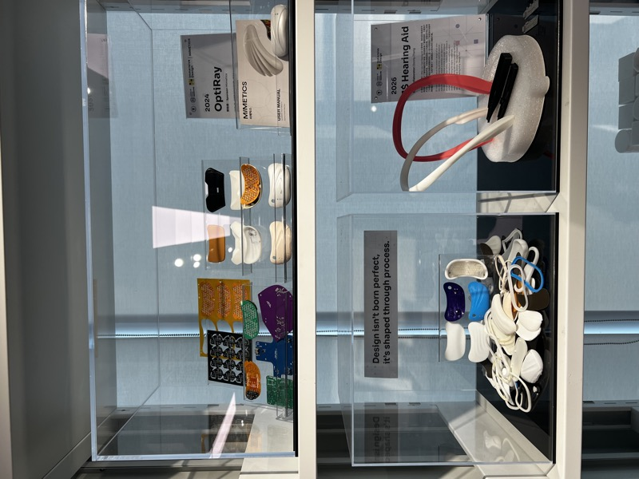
4. Collaborator Prof. Li Xueliang: The Real Pressure of Design Research and Grant Applications
My host, Prof. Li Xueliang, works primarily on design. He spoke frankly: national-level research grant applications are deeply unfriendly to comprehensive, interdisciplinary research. The evaluation criteria are built around foundational disciplines, "foundational disciplines hold the largest share and are easier to fund," whereas interdisciplinary HCI and design projects struggle to compete within that framework.
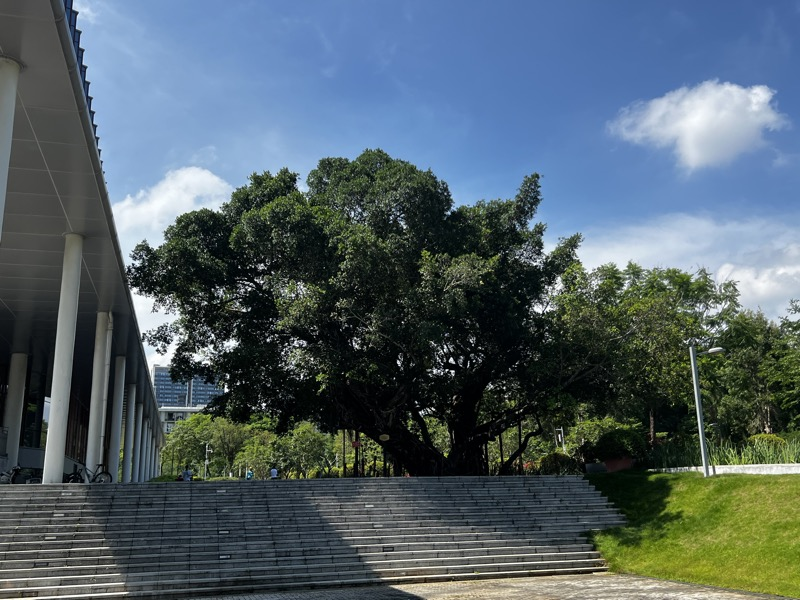
HKUST-GZ: A Mature Incubation Ecosystem Transplanting 34 Years of HKUST Heritage to Guangzhou
Traveling from Shenzhen to the HKUST-GZ campus in Nansha, Guangzhou, the overall atmosphere stood in sharp contrast to SUSTech. The campus felt more energetic and more driven, with a strong tempo yet without anxiety. The site has been operating for only about three years, yet it inherits 34 years of academic and industrial heritage from the Hong Kong main campus. This combination of "new campus and mature DNA" produced the most systematic finding of my trip: HKUST-GZ's six-tier business incubation structure.
1. The Early-Stage Dividend of a New Campus
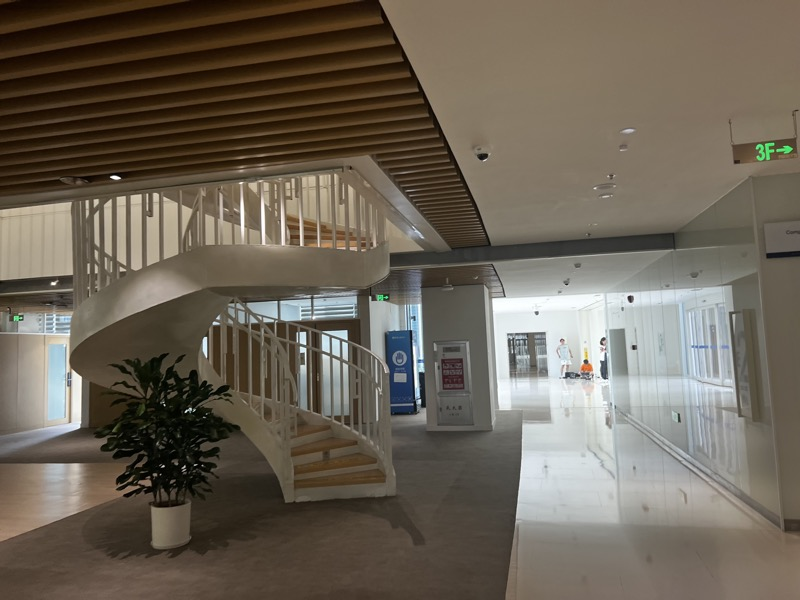
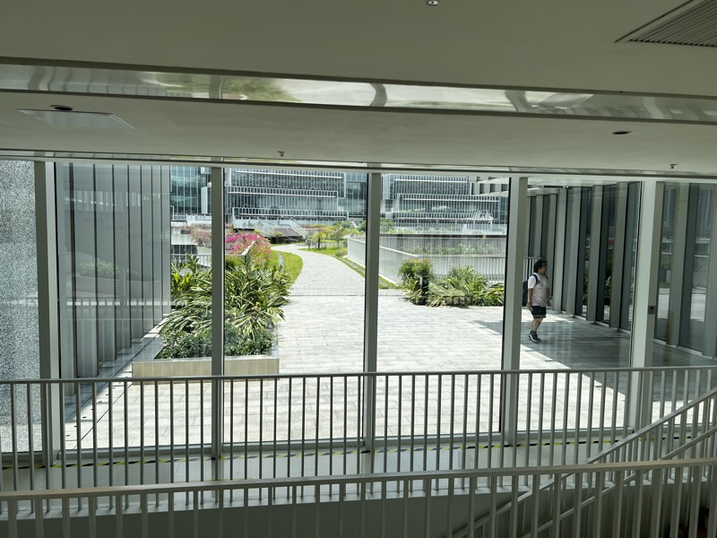
2. The Six-Tier Incubation Structure: A Funnel from 1,700 to 14
This is the part of the trip I personally felt most worth recording: the six-tier business incubation funnel that HKUST-GZ has formed together with the Hong Kong main campus. The structure has stabilized only after 34 years of continuous evolution.
The most consequential design choice in this structure is dynamic flow: among the 1,700 early-stage projects, those unable to compete or that lose their potential are dropped, and outstanding projects ascend tier by tier into the narrow channel of 70, 10, 10, and 14. Every tier is a continuously refreshed living ecosystem rather than a static archive.
3. The Red Bird Program: Dropping Graduate Students into Real Business Problems
Beyond the six-tier structure, HKUST-GZ runs an independent initiative called the Red Bird Program, another design I find well worth bringing back to Tsukuba for further thought:
This pattern of "bidirectional flow between school and industry" — where students raise the competitiveness of companies through their research outputs while companies train students through real problems — creates HKUST-GZ's distinctive virtuous cycle.
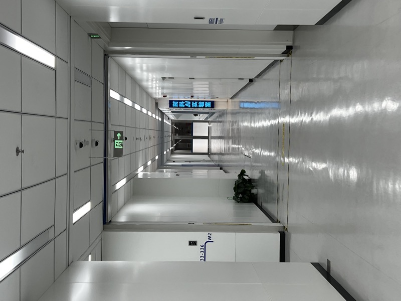
4. Collaborator Prof. Zhou Qiushi: A Corner for the Philosophy of Technology
My host, Prof. Zhou Qiushi, works on the philosophy of technology. His most memorable advice concerned diversifying research outputs: the same research outcome can be written up as a paper and at the same time converted into an artistic work, raising the output efficiency and social reach of a single research project. This resonated with my own intention to express research and art in tandem within the Cultural Fidelity Agent project.
Yu Chun's Keynote: "A Causal Perspective on Human-Computer Interaction in the LLM Era"
This was the densest session of the three days, and the one with the largest impact on my own research framework. Professor Yu Chun of the Department of Computer Science at Tsinghua University compressed twenty years of research into a single unifying keyword, "causality," and used it to redefine "what HCI should be doing in the era of large language models."
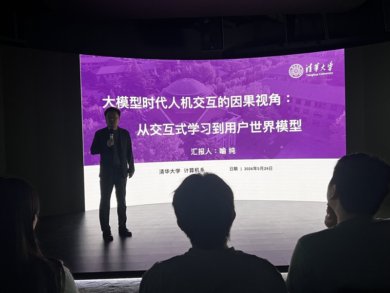
1. Twenty Years of Research, Distilled: From "Natural Interaction" to "Causality"
Professor Yu opened by recounting his research arc: completing his Tsinghua PhD in 2006, twenty years ago. He admitted that in his first PhD year he was still building laser-pointer recognition on FPGA boards (image processing), and only in his fourth year did he fully grasp what HCI was really about. During an internship at MSRA, his mentor BGP inspired him with the following:
2. The VSC Inference Framework: Intent → Behavior → Data
Professor Yu summarized the research paradigm of his past years: a unified framework using Bayesian inference to address intent understanding in HCI.
3. The LLM Era: HCI Leaping from Low-Level to High-Level
Professor Yu pointed out that before large language models, HCI operated at "low-level semantics": gesture recognition, touch recognition, speech recognition, and the like. After the rise of large language models, the level at which HCI operates has shifted.
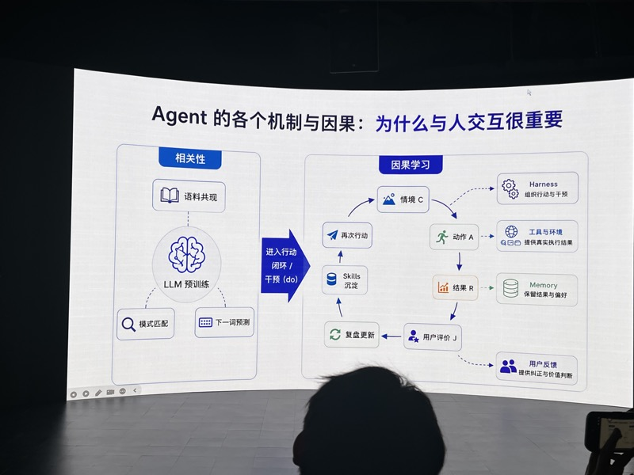
4. Interactive Learning versus RLHF
The "Interactive Learning" approach advanced by Professor Yu's team appears, in his view, closer to the future than RLHF: RLHF demands large-scale offline data processing and learning, while interactive learning can perform online learning for every end user. He drew the contrast through four properties:
5. Case 1 · OpenCD: Cognitive Diagnosis in Education
Yu Chun's team has published OpenCD (Open-Ended Cognitive Diagnosis) in the IoT venue as a concrete application of the causal framework. The system models the mathematical cognitive abilities of first and second graders, using open-ended multimodal tasks that let children simultaneously express "How can you show 46?" across three channels — objects, strokes, and speech — and uses OpenCD to infer each student's Cognitive Diagnostic Graph across Ordinality, Numerals, Grouping, Cardinality, Combination, and Unitizing.
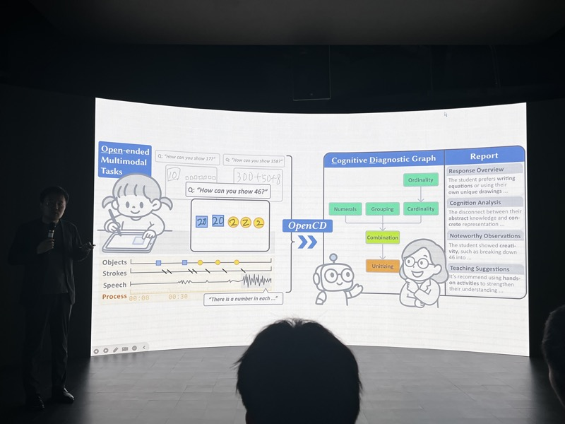
6. The Human World Model (HWM)
The Human World Model, HWM, proposed by Yu Chun's team is the most ambitious idea of the keynote and the one that excited me most. It differs from the "world model" of Yann LeCun and Fei-Fei Li:
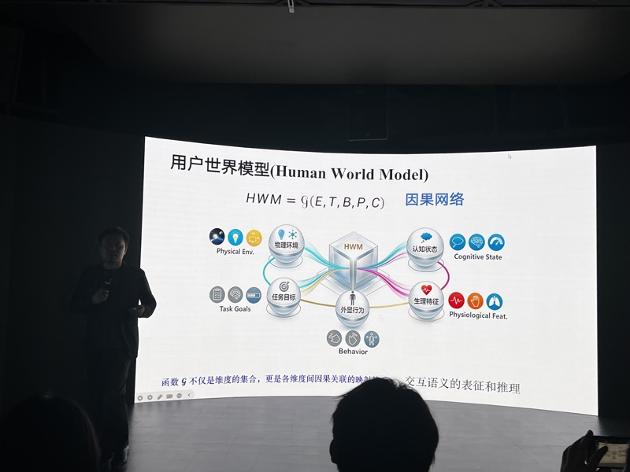
7. Two Hardware Devices: A Seven-Camera Helmet and a Smart Ring
HWM is not only a software-layer proposal. Yu Chun's team has built two "painstakingly selected" hardware devices in parallel:
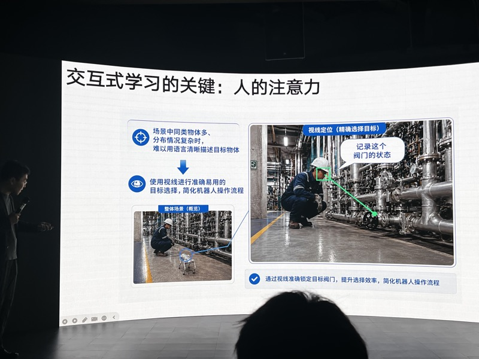
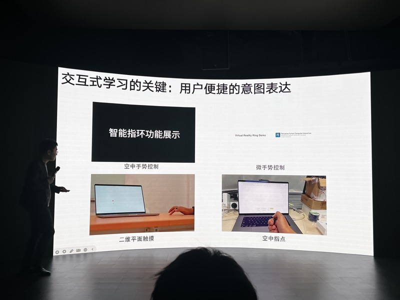
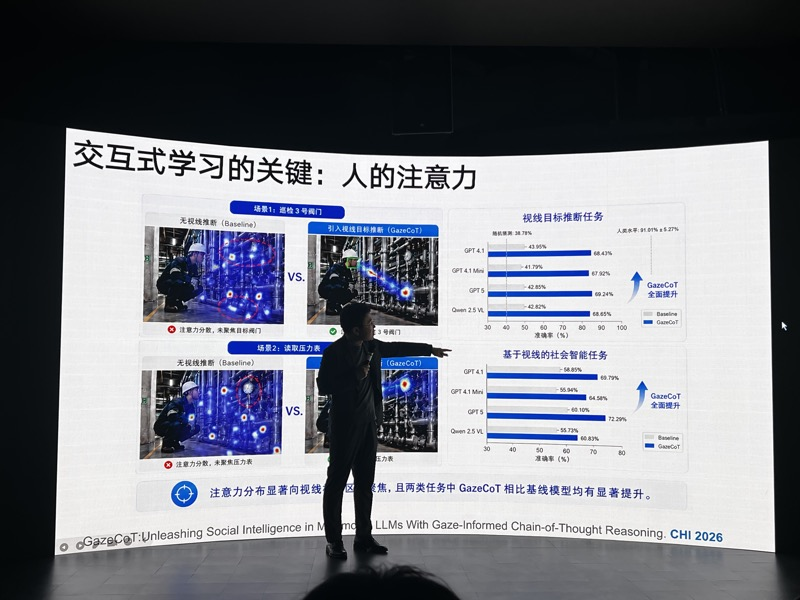
8. Octopus: A System for Recording a User's Day
Yu Chun's team is internally using a system called Octopus that records approximately 17 hours per day (excluding seven hours of sleep). It captures phone audio data (kept on-device only, never uploaded to the cloud) and PC Desktop Activity Recognition. From these raw streams the system extracts intermediate variables such as "personality, what one cares about, and preferences" for downstream services to consume.
The team plans to adopt a Harness paradigm rather than fully autonomous Agent execution, with the human also considered inside the Harness: "building interactive learning into the Harness itself." A usable form is expected to be released within this year.
9. Closing Methodological Advice: A Seven-Day Iteration Cycle
Yu Chun's final slide offered methodological advice for students that was aggressive but also sincere:
My Reflection: Five Contrasts and a Self-Audit by an HCI Researcher
After three days of observation, several contrasts kept resurfacing in my mind. As an HCI and digital exhibition researcher based at Tsukuba, this visit gave my own research framework a substantial jolt, especially through Professor Yu Chun's causal perspective.
"Change" versus "Accumulation": Shenzhen's Speed and Guangzhou's Depth
SUSTECH · CHANGE
SUSTech sits in a period of rapid transformation driven by Shenzhen's policy direction. The originally planned School of Design was adjusted in response to policy shifts. Faculty are highly internationalized, the student-to-faculty ratio is small, and curriculum reform moves quickly. The cost, however, is that structures are unstable and long-term plans are hard to land, leaving comprehensive directions such as HCI especially disadvantaged when applying for national-level grants.
HKUST-GZ · ACCUMULATION
Although the HKUST-GZ campus is new (about three years old), it inherits 34 years of academic-to-commercial conversion heritage from the Hong Kong main campus. Its six-tier incubation structure, the Red Bird Program, and its value-oriented culture are all "bought with time." The new campus simply transplants mature genes into Guangzhou's soil.
Neither model is perfect. SUSTech's "change" may generate genuinely original research, while HKUST-GZ's "accumulation" secures a high rate of industrial implementation. For my own research direction in HCI and cultural experience, the implication is this: "rapid change" is both an opportunity and a risk for an individual researcher. One either finds an environment of SUSTech's risk-bearing kind, or chooses a mature conversion funnel of the HKUST-GZ kind. Having both at once is hard.
The Real Challenge of HCI Commercialization: Evaluation Systems Built Around Foundational Disciplines
Prof. Li Xueliang's line — "comprehensive, interdisciplinary research is evaluated under the foundational-discipline framework, and the challenge is substantial" — was the moment of the trip that confronted me most directly. HCI still occupies a marginal position within the Chinese academic system. It is neither the mainstream computer science of algorithms and systems, nor a pure humanities field of design and aesthetics, and evaluation systems on either side struggle to "score" it.
Prof. Sun Wu (from Korea) at SUSTech has navigated this well by leveraging his alumni elite network to connect his research directly to American companies. This is a case of "individual networks compensating for structural deficiencies" — feasible for some people, but not a general solution.
HKUST-GZ's Six-Tier Funnel is a Disassemblable, Learnable "Research-to-Business" Pipeline
The structure of 1,700 projects narrowing to 70 early-stage firms, then 10 pre-unicorns, 10 unicorns, and 14 listed companies, is striking less for its numbers than for its dynamic flow. Each tier is not a static archive but is refreshed every year. Behind it lies a "fault-tolerant ecosystem": large numbers of projects are allowed to fail and to be naturally eliminated, while a small number of successful projects ascend tier by tier.
By contrast, Tsukuba (and most mainland universities) tend toward "every project must succeed" in research evaluation, which pushes researchers toward conservatism and away from high-risk, high-reward research. HKUST-GZ's combination of a high failure rate with a strong incubation structure may be the genuine route to producing unicorns at scale. This is one observation I will bring back to share with the faculty and students of my own lab.
Yu Chun's "Causal" Framework is a Self-Redefinition of HCI in the LLM Era
In my own work on HCI, digital exhibition, and cultural experience, I have spent recent years chasing the capabilities of large language models without often pausing to ask, "What is HCI's distinctive value in the LLM era?" Professor Yu Chun's answer was deeply instructive.
"Interaction is intrinsically temporal. The behavior of one moment determines the phenomena of the next. Interaction naturally carries causal information." This implies that HCI is not a "decorative wrapper" around large language models, but rather a critical channel for supplying causal capacity to those models — using the user's interaction data to construct the inverse path from effect back to cause.
This gives my Cultural Fidelity Agent project a fresh angle: the core of CFA should not merely be "output evaluation." It should construct a closed loop of "Human World Model plus interactive learning," in which the Agent gradually learns the causal judgment of "what counts as cultural authenticity" through interaction with cultural experts.
Prof. Zhou Qiushi's Suggestion: Simultaneously Render Research as Artistic Work
Prof. Zhou Qiushi's parting suggestion at HKUST-GZ seemed simple: "The same research outcome can be written up as a paper and at the same time converted into an artistic work." Yet it was a line of thought I had not seriously considered before.
For a researcher working in digital exhibition and cultural experience, this fit is almost native: my research subject already lives along the boundary of art and culture. Releasing a single research project as paper, artwork, and workshop demo at once allows my output to be read by academic, artistic, and public audiences simultaneously. This resonates with Yu Chun's claim that "everyone has to work on what brings them the greatest happiness," because for a researcher, "greatest happiness" may be exactly what multi-channel output makes possible.
Back to My Own Research: Four Takeaways
- Adopt "causality" as the central framework of the CFA project. Yu Chun's triad of "from effect to cause, Human World Model, and interactive learning" can transfer directly into the research architecture for evaluating cultural authenticity, allowing the CFA Agent to learn the causal judgment of "what counts as cultural authenticity" through dialogue with cultural experts.
- Diversify research outputs across multiple channels. Following Prof. Zhou Qiushi's suggestion, the same research outcome can be released as a paper, an artistic work, and a public workshop demo, raising the "output coefficient" of a single research project.
- Adopt Yu Chun's seven-day iteration cadence for small-tool experiments. Use web coding to rapidly build a prototype, deploy it to myself, then the lab, then 100 users, and let real usage data define the research question rather than mining problems out of paper reviews.
- Continue to observe the HKUST-GZ incubation funnel. It is a "fault-tolerant ecosystem" of clear structural relevance to anyone considering future academic-to-commercial conversion, including the commercialization of CFA.
Photo Log: Three Days of Working Visual Records
From the open campus of SUSTech to the spiral staircase of HKUST-GZ, and on to the curved projection screen of Professor Yu Chun's auditorium, these photos are arranged along the visit route.
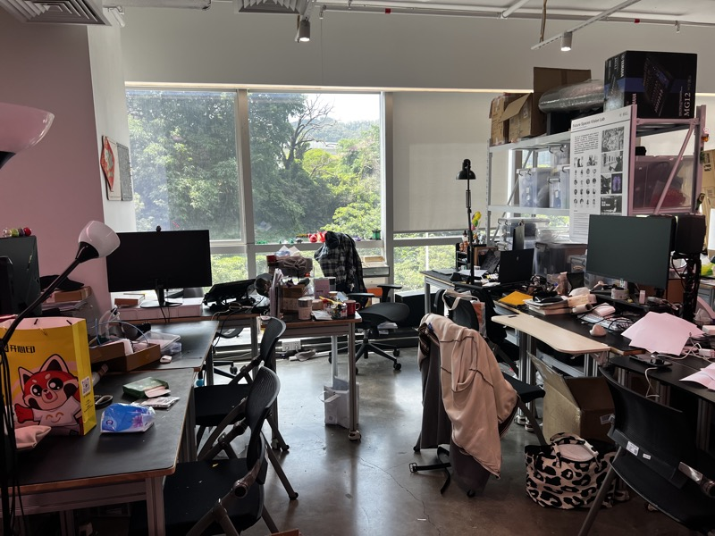